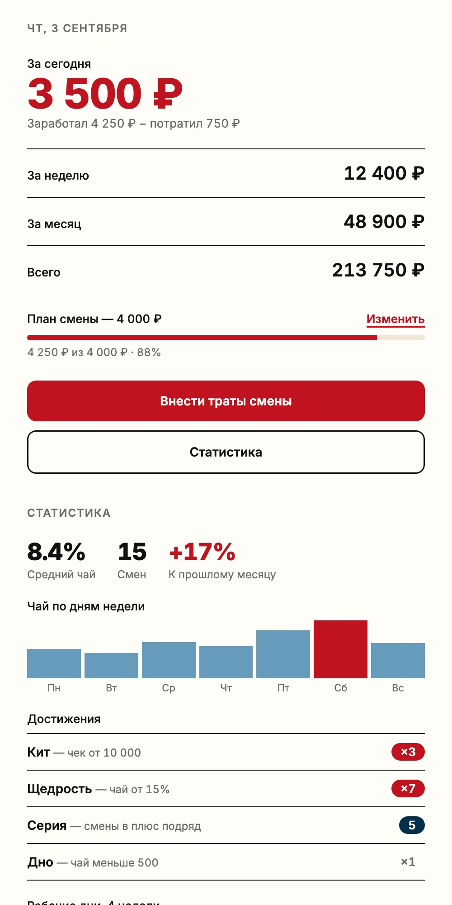
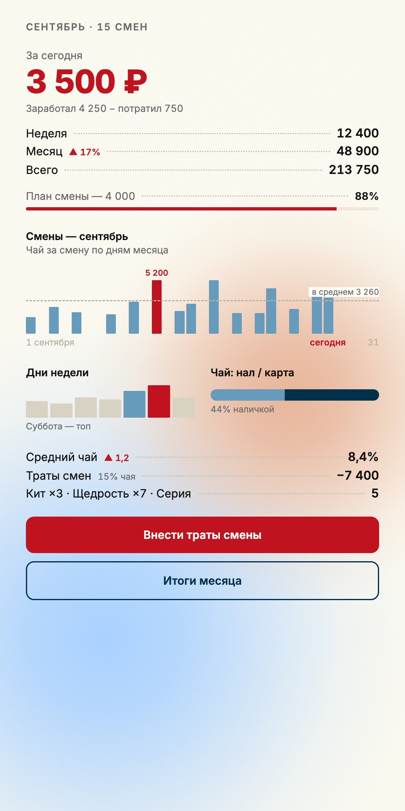
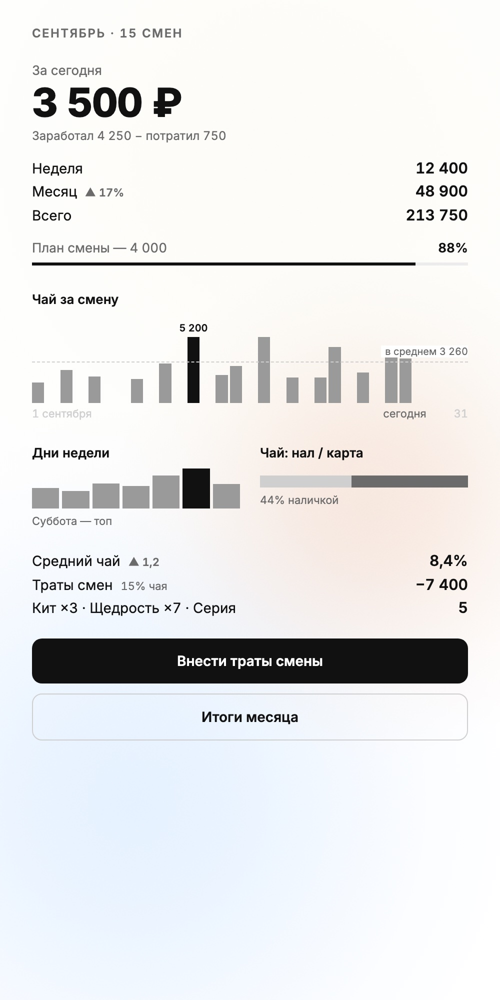
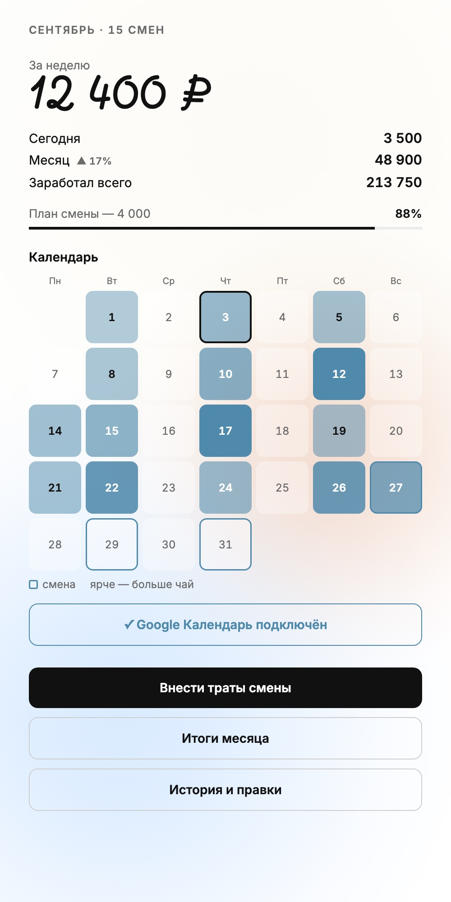
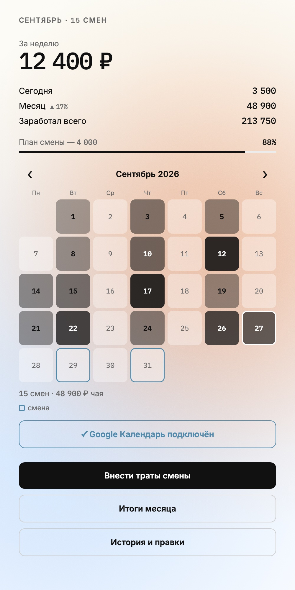
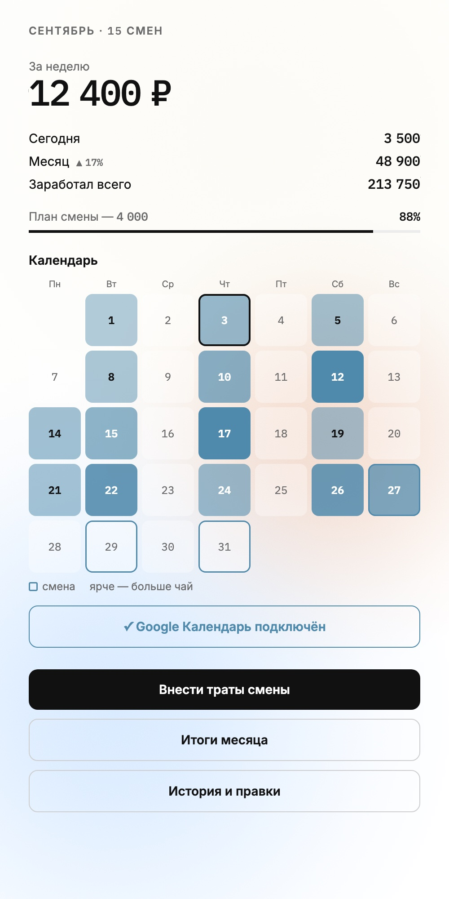

Телеграм-бот для учёта чаевых
Я работаю официантом. Чай приходит частями за смену, а в конце дня из него уходят мойка, бар, еда и такси. Сколько смена принесла на самом деле, никто не считает — держат в голове. Я сделал бота для себя и пользуюсь им полтора месяца. Ниже не пересказ замысла, а то, как менялся экран: за неделю набралось двадцать пять версий, все скриншоты подняты из истории проекта.
Начал с геймификации
Первая версия выглядела как приложение, которое хочет понравиться. Красный акцент, крупная цифра за сегодня и блок достижений: «Кит» — чек от десяти тысяч, «Щедрость» — чай от пятнадцати процентов, «Серия» и «Дно». Я придумал их за вечер, потому что мне было интересно их делать.
Через несколько дней я их удалил. Причина простая: я не мог объяснить, зачем они официанту. Достижения предполагают, что человек хочет соревноваться с собственным заработком, а я такого желания у себя не обнаружил. В коммите это записано как «непроверенный гарнир».


Свёл экран в монохром
Дальше я убрал цвет как украшение. Красный акцент исчез, столбики стали серыми, чёрным остался только максимум — лучшая смена месяца. Средняя линия по графику подписана прямо в поле, а не вынесена в легенду.
Экран стал плотнее и при этом спокойнее: всё, что раньше требовало перехода в статистику, поместилось на одну прокрутку. Цвет с этого момента перестал означать «важно» и начал означать что-то конкретное.

Отказался от баланса
Бот начинался как бюджетник: он знал остаток и складывал все траты подряд. Я это выключил и оставил один вопрос — сколько принесла смена.
Решение продуктовое, а не техническое. Баланс требует вносить всё, иначе цифра врёт, а продукт, который требует дисциплины, бросают на второй неделе. Отказ от баланса дал ещё одно следствие, которое пригодилось позже: боту незачем знать, сколько у человека денег.
Пересчитал сутки
Смена заканчивается в час-два ночи. Календарные сутки к этому моменту уже сменились, и чай, записанный в 00:30, попадал в следующий день. Одна смена разваливалась на две: «за сегодня» обнулялось посреди работы, смен в статистике становилось вдвое больше, а средний чай за смену занижался ровно вдвое.
Я развёл календарный день и рабочий: сутки в продукте начинаются в шесть утра. Ошибка жила в продукте с первой версии, и это самое неприятное наблюдение за проект: я сам закрываюсь ночью, но собственная рутина настолько привычна, что не превратилась в требование.
Развёл цвет и количество
К этому моменту на главном экране жил календарь, где насыщенность синего показывала, сколько было чая. Тем же синим обводился день с запланированной сменой. Тем же синим была кнопка Google Календаря. Три разных смысла одним цветом на одном экране.
Заметил я это не в макете, а когда делал фон ярче: цветная подложка начала спорить с ячейками, и стало видно, что спорить им вообще есть о чём. Первым побуждением было перекрасить шкалу, но это перенесло бы конфликт, а не убрало его.
Я увёл количество из цвета совсем. Насыщенность стала нейтральной — от светло-серого к почти чёрному, — а цвет остался только за типом счёта и отметкой смены. Теперь темнота значит «сколько», цвет значит «чем», и фон не может помешать ни тому, ни другому.


Поставил моноширинные цифры
Главная цифра сначала была рукописным шрифтом — мне нравилось, как это выглядит. Но суммы в списке стояли столбиком и не выравнивались: в пропорциональном наборе единица уже семёрки, и колонка разъезжается.
Я перевёл все числа в моноширинный набор, а текст оставил прежним. Рукописный шрифт при этом пришлось убрать: он жил ровно на главной цифре, а она стала моноширинной. Разряды в русской локали разделяются неразрывным пробелом, и в моноширинном он оказался шириной с цифру — «12 400» читалось как два числа. Пришлось поджать межсловный интервал, не трогая сами цифры.

Убрал имена из базы
Я предлагал бота коллегам и видел вежливый отказ без формулировки. Возражение, которое я считал невербально, звучало примерно так: бота написал коллега, значит коллега видит, кто сколько зарабатывает. В ресторане это чувствительнее, чем кажется со стороны — чай у всех разный.
Я проверил, что хранится, и возражение оказалось справедливым: в базе лежали имя и телеграм-ник. Причём они не использовались нигде — записывались по инерции с первой версии.
Поэтому я не стал писать успокаивающий текст, а изменил устройство: четыре поля из таблицы удалены, человек в базе — числовой идентификатор. Добавились три команды: показать, что именно хранится, забрать свои записи файлом и стереть себя вместе с ними. Код открыт, чтобы это можно было проверить, а не принимать на слово.
Тогда же выяснилось, что бот обращался к человеку в мужском роде: «ошибся счётом», «что потратил». В зале работают в основном женщины, то есть для половины пользователей он разговаривал не с ними. Я переписал реплики без рода и заодно убрал панибратство — «погнали», «жми», «сколько подняла». Слово «чай» оставил: так говорят сами официанты.
Что сделано и чего нет
Сделано:
- Запись чая одним сообщением или пересылкой уведомления банка, откуда берутся сумма, чек и процент.
- Закрытие смены с вычетом трат и итогом «чистыми».
- Расписание смен и вечернее напоминание в те дни, на которые смены поставлены.
- Мини-приложение: календарь по месяцам, разбор дня по нажатию, средний процент от счёта, лучшая смена, сравнение с прошлым месяцем.
- Приватность: имён в базе нет, выгрузка и удаление своих данных, открытый код.
- Девяносто шесть автоматических проверок, включая отдельные — на доступ к чужим записям.
Не сделано, и это важно назвать прямо:
- Пользователь один — я. Полтора месяца ежедневного использования, но ни одно решение не проверено на других людях.
- Резервных копий нет. Пока данные только мои, потеря неприятна; с первым чужим пользователем она станет недопустимой.
- Метрик нет. Сколько людей дошли до первой записи и вернулись ли на вторую смену — измерять нечем.
- Google Календарь подключается только вручную: приложение не прошло проверку Google, и посторонний упирается в отказ.
Почему коллеги не пользуются
Это главный нерешённый вопрос проекта, и я не хочу его сглаживать. Я предлагал бота несколько раз. Никто не отказался прямо, но никто и не начал.
На возражение о приватности я ответил устройством продукта — и это была правильная работа. Но я сделал её на основании догадки: считал возражение по реакции, а не услышал словами. Ни одного нормального разговора о том, почему человек не начал, я так и не провёл.
Поэтому честный статус такой: я не знаю, был ли барьер в доверии. Может мешать привычка считать в голове, может — то, что предлагает коллега, а не незнакомый сервис. Я построил продукт, которому можно доверять, но не проверил, что именно останавливает людей.
Куда бы я повёл проект дальше
- Поговорить с пятью-семью коллегами по одному сценарию: как они сейчас считают чай, что делают в конце смены, что почувствовали, когда я предложил бота. Без демонстрации продукта, иначе разговор превратится в вежливое одобрение.
- Проверить гипотезу про доверие отдельно от остальных: дать посмотреть на похожего бота, который мне не принадлежит, и сравнить реакцию.
- Довести первый экран до состояния, когда он объясняет пользу за пять секунд: сейчас незнакомый человек видит пустой чат до нажатия «Старт».
- Настроить резервные копии и подключить измерения — до прихода первого чужого пользователя, а не после.
- Проверить, нужна ли статистика вообще. Календарь, проценты и рекорды я сделал потому, что мне это интересно. Возможно, официанту нужна одна цифра за смену и больше ничего.
Что я понял, делая этот проект
- Собственная рутина — слепое пятно. Ночная смена ломала подсчёт с первой версии, и при этом я закрываюсь ночью сам. То, что делаешь каждый день, не превращается в требование именно потому, что оно привычно.
- Часть решений видна только на работающем продукте. И ночная смена, и спор трёх синих, и разъехавшийся неразрывный пробел в моноширинном наборе нашлись в живом экране, а не в макете. Поэтому я довожу свои проекты до кода.
- Приватность — это устройство, а не текст. Удалённые поля, выгрузка своих данных и открытый код проверяемы, а успокаивающая страница осталась бы обещанием. Разница между «я не буду смотреть» и «смотреть не на что» решает, поверят ли тебе.
- Один цвет — один смысл. Пока синий значил и количество, и тип счёта, и отметку в графике, ни одно из трёх значений не читалось надёжно.
- Легче всего удалять то, что делал не ты. Достижения и рукописный шрифт я убирал у самого себя, и оба раза это было труднее, чем добавить.